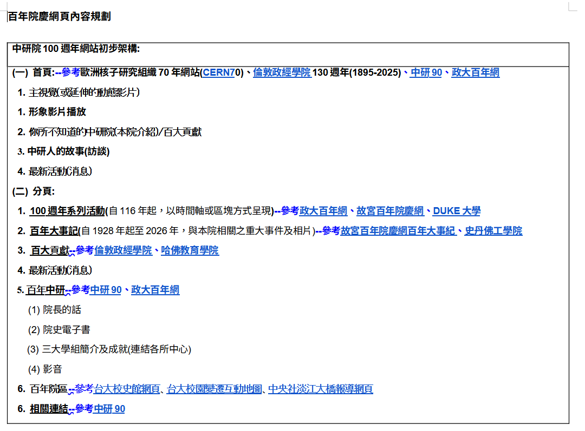
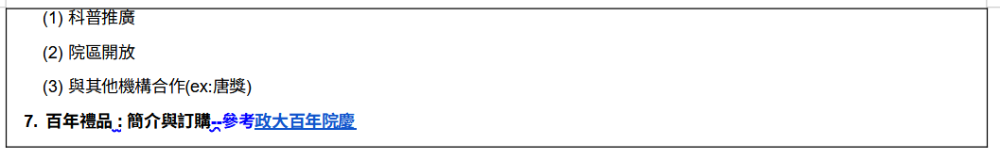

01
先分析參考網站 分析
我說「幫我分析（籌備文件）裡面提到的網站 大概就好 不用全部都爬取 了解其中使用的技術——網站架設是什麼框架、裡面的呈現用了什麼套件……是否有用 CDN、放在雲端還是自己的主機。請不要以攻擊的方式看別人的網站喔」


AI 做了什麼
- 從需求
.docx的超連結找出 15 條連結（12 個網域）（政大、台大、故宮、CERN、LSE、Stanford、中研院院慶站…） - 以一般訪客的方式各請求一次首頁（命令列請求帶瀏覽器樣式的 User-Agent，加上內建瀏覽器開頁），讀公開的 HTML 與 HTTP 回應標頭判斷技術，不掃描、不探測
- 中研院院慶站：命令列請求得到 401，再用內建瀏覽器開一次，看到「IP 已被封鎖」頁面後就停手，沒有嘗試繞過，並如實回報「只能推論它是自架 + WAF」
- 整理成比較表與結論
重點
我請 AI 幫我去查的 15 條連結
這些連結原本就附在需求文件裡。我只說「幫我去查」，AI 自己把它們從文件取出、逐一開啟並判讀技術與呈現方式。以下是完整清單與它查到的結果（呈現方式為依原始碼中的套件與網址路徑推斷，並非逐頁視覺檢視）。
15條不重複連結（12 個網域）
8個網站被實際開啟
7個讀到結果
1個被封鎖，AI 停手
| 對應頁面 | 連結 | 狀態 | 主要呈現方式 | AI 查到的技術／部署 |
|---|---|---|---|---|
| 首頁 | cern70.cern | 已讀取 | 官網式多區塊＋3D 場景＋互動地圖＋輪播／跑馬燈 | WordPress 6.9；Three.js、Leaflet、jQuery；自架（Apache） |
| 首頁 | lse.ac.uk/about-lse/lse-130-anniversary | 未另外開啟 | — | — |
| 首頁／中研院院慶 | anniversary.sinica.edu.tw（文件內出現 3 次） | 被封鎖 401 | — | AI 停手，沒有繞過；只能推論由中研院自行維運、前有 WAF |
| 首頁／版型 | 100.nccu.edu.tw | 已讀取 | 區塊式長頁：Hero → 影片區塊 → 輪播／卡片；另有時程頁、紀念品子站 | Laravel + Vue；Swiper、YouTube 嵌入；自架 nginx，部分 cdnjs；並量測配色（暖白底、金色點綴、深色主色塊）與字型 |
| 系列活動 | 100.nccu.edu.tw/schedules | 未另外開啟 | — | — |
| 系列活動 | theme.npm.edu.tw/npm100/…/exhibition | 僅讀首頁 | 列表＋輪播：活動展覽列表、大事紀列表 | Nuxt（Vue SSR）；Swiper（大量）；自架 |
| 系列活動 | 100.duke.edu/event-calendar | 未另外開啟 | — | — |
| 百年大事記 | theme.npm.edu.tw/npm100/Chronicles/ChroniclesList | 僅讀首頁 | 同上 | 同上（Nuxt SSR） |
| 百年大事記 | engineering100.stanford.edu/timeline | 已讀取 | 互動時間軸（網址 /timeline） | Next.js；Three.js、Barba；Vercel |
| 百大貢獻 | lse.shorthandstories.com/…/index.html | 已讀取 | 長頁分段敘事：視差、頁面轉場 | Shorthand 平台；Three.js、Barba、GSAP；AWS S3 + CloudFront |
| 百大貢獻 | gse.harvard.edu/about/history/hgse100 | 未另外開啟 | — | — |
| 百年院區 | historygallery.ntu.edu.tw | 已讀取 | 相片輪播為主的手刻多頁網站 | 無框架（靜態）；Swiper（大量）；自架 + WAF，無公有 CDN |
| 百年院區 | historygallery.ntu.edu.tw/2018建築史網站/ | 未另外開啟 | — | — |
| 百年院區 | cna.com.tw/project/…/danjiang-bridge | 已讀取 | 捲動敘事專題：邊捲動邊觸發圖文動畫 | Next.js；GSAP；IIS + Google Cloud 邊緣 |
| 百年禮品 | souvenir.nccu.edu.tw | 未另外開啟 | — | — |
「未另外開啟」的連結，AI 依需求文件對該頁面的文字描述來對應版型，沒有逐一打開。
延伸：把每個頁面對到「要用哪種版型」
依需求文件的「網站初步架構」逐頁整理，標出各頁採用的版型與對應的參考站（此圖為整理講解頁時補做，並附上最後對應的成品頁）。＊ 表示文件有列名，但這次沒有實際檢視。
- 中研院百年院慶網站需求文件：首頁 + 7 個分頁
- 首頁區塊式長頁參考：CERN 70、LSE 130、中研 90＊、政大百年成品 index.html
- 主視覺＋倒數全幅影片 Hero政大百年（section-hero）
- 形象影片播放影片區塊政大百年（section-video）
- 你所不知道的中研院／百大貢獻圖文分段LSE 130
- 中研人的故事（訪談）輪播政大、故宮、台大皆大量使用 Swiper
- 最新活動（消息）列表
- 100 週年系列活動時間軸／區塊政大百年（活動時程頁）、故宮、Duke＊成品 events.html
- 百年大事記可展開的時間軸故宮（大事紀列表）、Stanford（/timeline）成品 chronicle.html
- 百大貢獻分類卡片牆LSE 130、哈佛教育學院＊成品 contributions.html
- 最新活動（消息）列表最後併入首頁「最新消息」，未另立頁
- 百年中研區塊式長頁中研 90＊、政大百年成品 centennial.html
- 院長的話人物圖文
- 院史電子書封面＋翻閱入口
- 三大學組簡介三欄卡片
- 影音輪播
- 百年院區捲動敘事＋互動地圖台大校史館、台大校園變遷互動地圖＊、中央社淡江大橋成品 campus.html
- 相關連結連結卡片中研 90＊成品 links.html
- 百年禮品商品卡片＋輪播政大百年紀念品站成品 gifts.html
- 首頁區塊式長頁參考：CERN 70、LSE 130、中研 90＊、政大百年成品 index.html
版型圖鑑：這幾種版型長什麼樣
全幅 Hero／影片政大百年
輪播 Swiper政大、故宮、台大
時間軸故宮、Stanford
分類卡片牆LSE 130
捲動敘事中央社、LSE 130
互動地圖＋時間滑桿CERN 70、台大
列表消息、連結
我的做法：先把界線講在前面（「大概就好」「不要攻擊」）。AI 因此用保守的方式做，遇到擋住就停手，而不是硬闖。